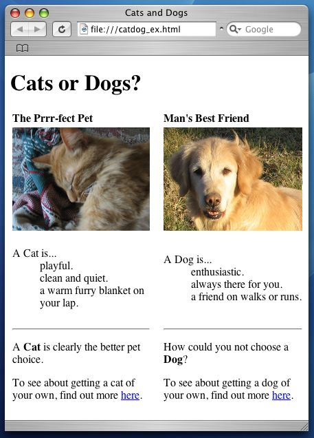
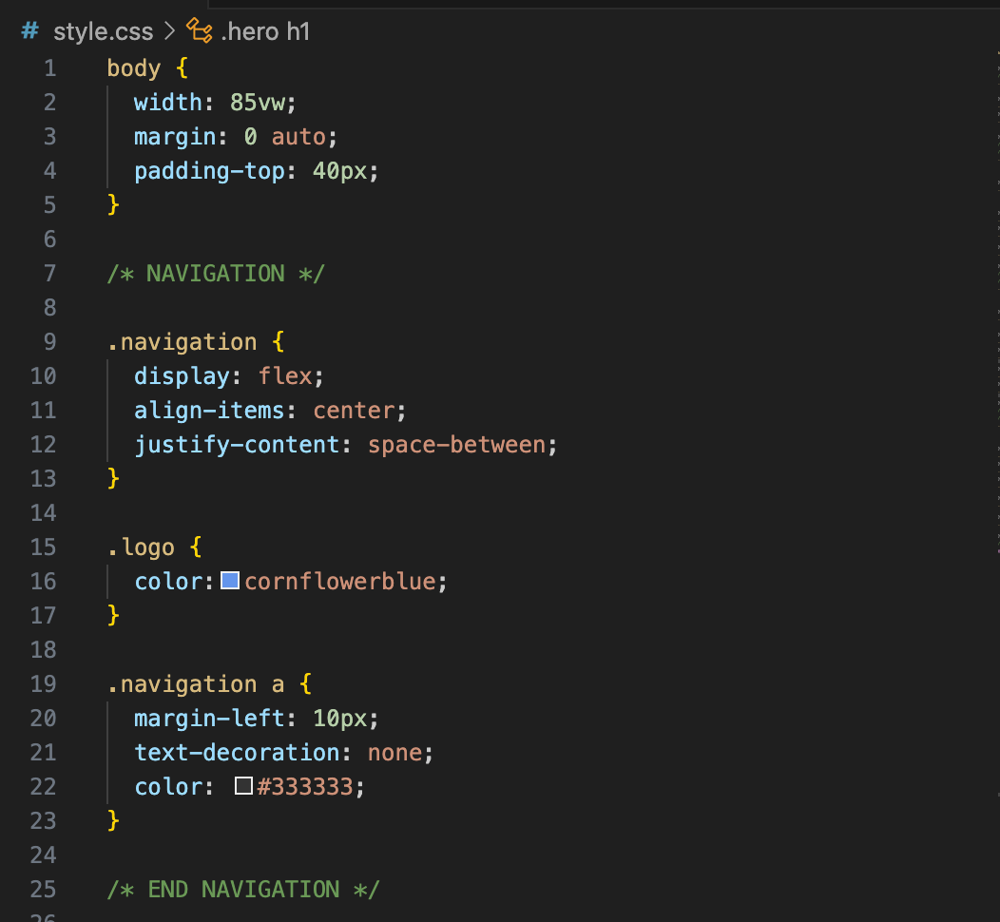

final changes to the website
This is a simple paragraph about the final changes made to the website.
AI Overview The latest changes to HTML websites involve a major shift toward native browser capabilities, HTML-first progressive enhancement, and streaming APIs that reduce reliance on heavy JavaScript frameworks.
Modern HTML updates introduce powerful native browser features that reduce the need for external scripts, while core web coding relies on clear separation between structure, style, and logic.
HTML (HyperText Markup Language) is the foundational standard language used to create and structure everything you see on the World Wide Web. It tells your web browser how to display text, handle images, and layout user interfaces.
- Variables: Containers for storing data values
- Functions: Reusable blocks of code that perform specific tasks
- Control structures: Rules that determine the flow of execution in a program
- Objects: Instances of classes that contain data and methods
- Libraries: Pre-written code that can be reused to perform common tasks
In this course, I have learned how to create a basic HTML5 structure, including the use of semantic elements like
Overall, this course has provided me with a solid foundation in web development, and I am excited to continue learning and building more complex websites in the future.
Overall, this course has provided me with a solid foundation in web development, and I am excited to continue learning and building more complex websites in the future.


What I Have Learned
HTML (HyperText Markup Language) is the foundational standard markup language used to create and structure content on the World Wide Web. Invented by Tim Berners-Lee, it serves as the structural "skeleton" of virtually every webpage on the internet, instructing web browsers on how to display text, images, and multimedia.